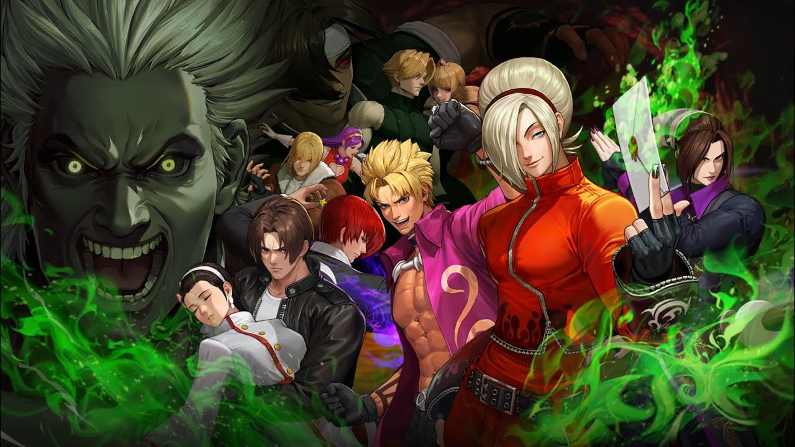
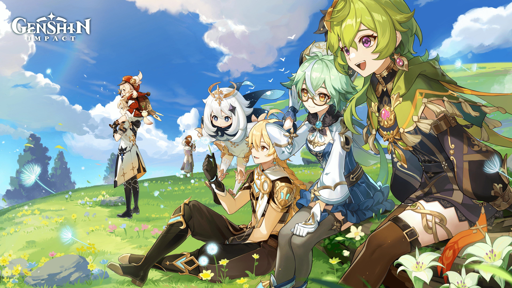

juegos que debes probar
The King of Fighters All-Star
"KOF All Stars" es un emocionante juego de acción y lucha disponible para dispositivos Android que combina la nostalgia de la serie clásica de juegos de lucha "The King of Fighters" con gráficos modernos y mecánicas de juego innovadoras. Desarrollado por Netmarble, este juego ofrece una experiencia única para los fanáticos de la franquicia y los amantes de los juegos de lucha en general.
En "KOF All Stars", los jugadores tienen la oportunidad de reunir a sus personajes favoritos de la serie "The King of Fighters", que abarca varias entregas de la franquicia, desde los clásicos hasta los más recientes. Los jugadores pueden formar equipos con estos icónicos luchadores y enfrentarse a desafiantes oponentes en una variedad de modos de juego emocionantes.
Una de las características más destacadas de "KOF All Stars" es su sistema de combate intuitivo y accesible. Los jugadores pueden realizar una variedad de movimientos y combos utilizando controles simples y táctiles en la pantalla de su dispositivo Android. Además, el juego presenta espectaculares habilidades especiales y ataques especiales que permiten a los jugadores desatar el poder de sus personajes favoritos en batallas llenas de acción y emoción.
Además de los modos de juego estándar, como el modo historia y el modo PvP, "KOF All Stars" ofrece eventos especiales y colaboraciones con otras franquicias populares, lo que brinda a los jugadores la oportunidad de obtener recompensas exclusivas y participar en desafíos únicos.
Con gráficos impresionantes, una jugabilidad adictiva y una amplia selección de personajes icónicos, "KOF All Stars" es un juego que cautiva tanto a los fanáticos de la serie "The King of Fighters" como a los nuevos jugadores que buscan una experiencia de lucha emocionante y llena de acción en sus dispositivos Android.
Genshin impact
"Genshin Impact" es un juego de rol de acción de mundo abierto desarrollado por miHoYo. Transporta a los jugadores al mundo mágico y vibrante de Teyvat, donde asumen el papel de un viajero que busca a su hermano perdido y descubre los secretos de este vasto mundo.
Los jugadores pueden explorar libremente el impresionante mundo de Teyvat, que está lleno de paisajes hermosos y diversos, desde vastas llanuras hasta majestuosas montañas y exuberantes bosques. Además de explorar el mundo, los jugadores pueden participar en emocionantes batallas en tiempo real con un sistema de combate fluido y dinámico.
Una de las características más destacadas de "Genshin Impact" es su sistema de personajes únicos y habilidades elementales. Los jugadores pueden formar un equipo con una variedad de personajes jugables, cada uno con sus propias habilidades y estilos de combate únicos, y pueden combinar las habilidades elementales de los personajes para desencadenar poderosos combos y efectos.
Además de la exploración y el combate, "Genshin Impact" ofrece una rica historia y una variedad de misiones y eventos para que los jugadores disfruten. También presenta un sistema de progresión de personajes y equipo, que permite a los jugadores mejorar a sus personajes y equiparlos con artefactos y armas poderosas.
Con su impresionante mundo abierto, su emocionante combate y su cautivadora historia, "Genshin Impact" ofrece una experiencia de juego inmersiva y emocionante que cautiva a jugadores de todo el mundo y lo convierte en uno de los juegos más populares en la actualidad.
